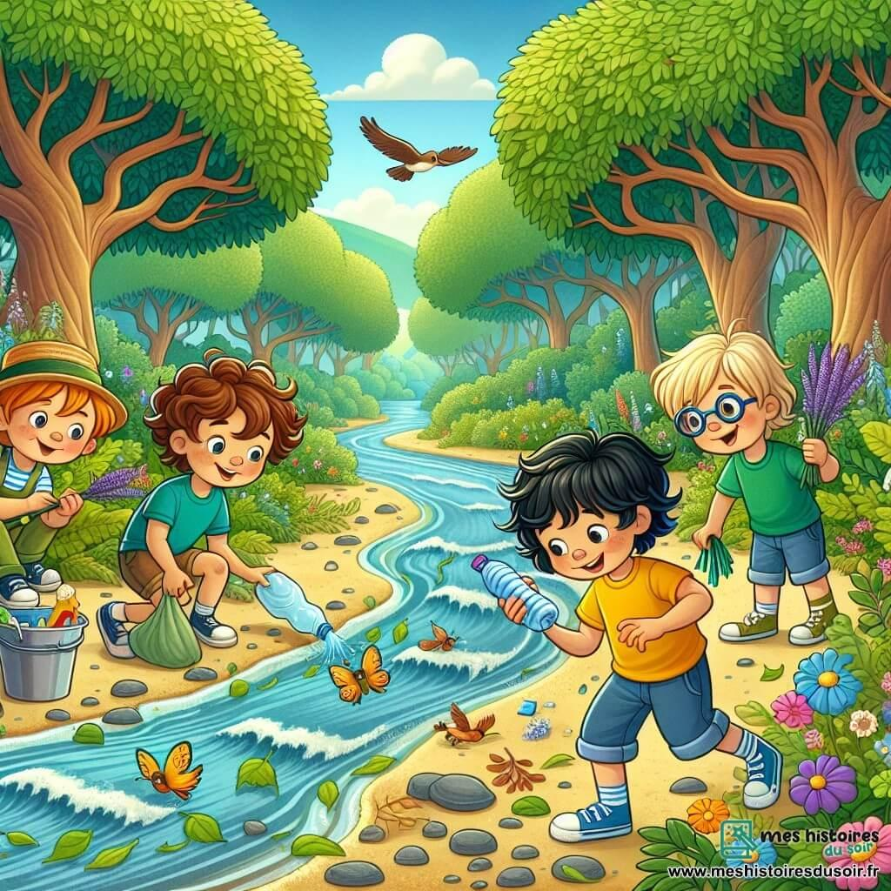
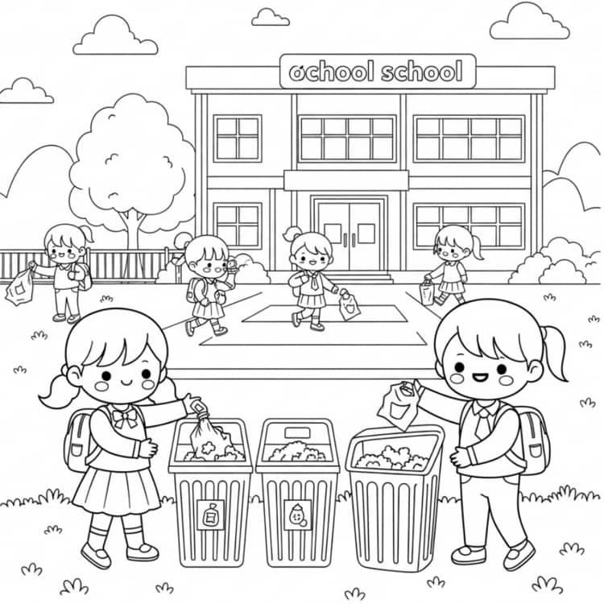

Lectura: El secreto del río limpio

Escribe Verdadero o falso según corresponda
Lee cada afirmación y marca si es verdadera o falsa. La respuesta correcta está señalada.
Tiempo por pregunta:
00:00:
Lista desordenada: arrastra para ordenar el texto según la lectura anterior.
Ordena los siguientes textos correctamente para completar la actividad.
- En una comunidad cercana a Los Patios, Mariana acostumbraba caminar junto al río con su abuelo.
- Mariana observó que el río estaba sucio y le preguntó a su abuelo qué estaba ocurriendo.
- La profesora y los estudiantes organizaron la campaña Guardianes del río para crear conciencia
- Las familias, los vecinos y los estudiantes participaron en una jornada de limpieza y sembraron plantas.
- Mariana comprendió que proteger la naturaleza era una responsabilidad compartida y continuó promoviendo su cuidado.
Relaciona cada palabra con su significado.
Relaciona cada tarjeta con su pareja.
{"typeGame":"Relaciona","author":"","randomCards":true,"instructions":"
Relaciona cada tarjeta con su pareja.
","showMinimize":false,"itinerary":{"showClue":false,"clueGame":"","percentageClue":40,"showCodeAccess":false,"codeAccess":"","messageCodeAccess":""},"cardsGame":[{"url":"","x":0,"y":0,"author":"","alt":"","audio":"","color":"#000000","backcolor":"#ffffff","eText":"Contaminaci%C3%B3n%20","urlBk":"","xBk":0,"yBk":0,"authorBk":"","altBk":"","audioBk":"","colorBk":"#000000","backcolorBk":"#ffffff","eTextBk":"Alteraci%C3%B3n%20perjudicial%20del%20ambiente%20por%20residuos%20u%20otras%20sustancias."},{"url":"","x":0,"y":0,"author":"","alt":"","audio":"","color":"#000000","backcolor":"#ffffff","eText":"Comunidad","urlBk":"","xBk":0,"yBk":0,"authorBk":"","altBk":"","audioBk":"","colorBk":"#000000","backcolorBk":"#ffffff","eTextBk":"Grupo%20de%20personas%20que%20comparten%20un%20lugar%20y%20conviven%20en%20%C3%A9l"},{"url":"","x":0,"y":0,"author":"","alt":"","audio":"","color":"#000000","backcolor":"#ffffff","eText":"Cooperaci%C3%B3n","urlBk":"","xBk":0,"yBk":0,"authorBk":"","altBk":"","audioBk":"","colorBk":"#000000","backcolorBk":"#ffffff","eTextBk":"Trabajar%20con%20otras%20personas%20para%20lograr%20un%20prop%C3%B3sito%20com%C3%BAn."},{"url":"","x":0,"y":0,"author":"","alt":"","audio":"","color":"#000000","backcolor":"#ffffff","eText":"Plantas%20nativas%20","urlBk":"","xBk":0,"yBk":0,"authorBk":"","altBk":"","audioBk":"","colorBk":"#000000","backcolorBk":"#ffffff","eTextBk":"Plantas%20propias%20de%20una%20regi%C3%B3n%20o%20lugar"},{"url":"","x":0,"y":0,"author":"","alt":"","audio":"","color":"#000000","backcolor":"#ffffff","eText":"Responsabilidad%20","urlBk":"","xBk":0,"yBk":0,"authorBk":"","altBk":"","audioBk":"","colorBk":"#000000","backcolorBk":"#ffffff","eTextBk":"Cumplir%20los%20deberes%20y%20actuar%20considerando%20las%20consecuencias"}],"isScorm":0,"textButtonScorm":"Guardar la puntuación","repeatActivity":true,"weighted":100,"textAfter":"","version":2,"percentajeCards":100,"type":0,"showSolution":true,"timeShowSolution":3,"time":3,"evaluation":false,"evaluationID":"ae37bede-d956-45ec-87c9-24e3137fe08d","id":"idevice-1790348921280-vbmtayt0p","msgs":{"msgSubmit":"Enviar","msgClue":"¡Genial! La pista es:","msgCodeAccess":"Código de acceso","msgPlayStart":"Pulsa aquí para jugar","msgScore":"Puntuación","msgErrors":"Errores","msgHits":"Aciertos","msgMinimize":"Minimizar","msgMaximize":"Maximizar","msgFullScreen":"Pantalla Completa","msgExitFullScreen":"Salir del modo pantalla completa","msgNoImage":"Pregunta sin imágenes","msgEndGameScore":"Comience la partida antes de guardar la puntuación.","msgScoreScorm":"La puntuación no se puede guardar porque esta página no forma parte de un paquete SCORM.","msgOnlySaveScore":"¡Solo puede guardar la puntuación una vez!","msgOnlySave":"Solo puede guardar una vez","msgInformation":"Información","msgYouScore":"Su puntuación","msgAuthor":"Autoría","msgOnlySaveAuto":"Su puntuación se guardará después de cada pregunta. Solo puede jugar una vez.","msgSaveAuto":"Su puntuación se guardará automáticamente después de cada pregunta.","msgSeveralScore":"Puede guardar la puntuación tantas veces como quiera","msgYouLastScore":"La última puntuación guardada es","msgActityComply":"Ya ha realizado esta actividad.","msgPlaySeveralTimes":"Puede realizar esta actividad cuantas veces quiera","msgClose":"Cerrar","msgAudio":"Audio","msgNumQuestions":"Número de tarjetas","msgTryAgain":"Necesitas al menos %s% de respuestas correctas para obtener la información. Inténtalo de nuevo.","msgEndGameM":"Has completado el juego. Tu puntuación es %s.","msgUncompletedActivity":"Actividad no completada","msgSuccessfulActivity":"Actividad superada. Puntuación: %s","msgUnsuccessfulActivity":"Actividad no superada. Puntuación: %s","msgTypeGame":"Relaciona","msgCheck":"Comprobar","msgRestart":"Reiniciar"}}Su navegador no es compatible con esta herramienta.
Observa la imagen y luego responde de acuerdo a lo aprendido en el desarrollo de la actividad.
Elija la respuesta correcta: Ahora relaciona la enseñanza de la lectura con tu propia escuela.

2
%E9%B0%F3%E1%FB%F5%FC%F3%E6%E7%E0%F3%B0%A8%B0%B0%BE%B0%F3%E7%E6%FA%FD%E0%B0%A8%B0%B0%BE%B0%F3%E7%E6%FA%FD%E0%C4%FB%F6%F7%FD%B0%A8%B0%B0%BE%B0%E6%EB%E2%F7%D5%F3%FF%F7%B0%A8%B0%C3%E7%D7%EA%E6%B0%BE%B0%F7%FC%F6%C4%FB%F6%F7%FD%B0%A8%A2%BE%B0%FB%F6%C4%FB%F6%F7%FD%B0%A8%B0%B0%BE%B0%E1%E6%F3%E0%E6%C4%FB%F6%F7%FD%B0%A8%A2%BE%B0%FB%FC%E1%E6%E0%E7%F1%E6%FB%FD%FC%E1%D7%EA%F7%B0%A8%B0%B7%A1%D1%E2%B7%A1%D7%D7%FE%FB%F8%F3%B7%A0%A2%FE%F3%B7%A0%A2%E0%F7%E1%E2%E7%F7%E1%E6%F3%B7%A0%A2%F1%FD%E0%E0%F7%F1%E6%F3%B7%A1%D3%B7%A0%A2%D3%FA%FD%E0%F3%B7%A0%A2%E0%F7%FE%F3%F1%FB%FD%FC%F3%B7%A0%A2%FE%F3%B7%A0%A2%F7%FC%E1%F7%B7%D4%A3%F3%FC%E8%F3%B7%A0%A2%F6%F7%B7%A0%A2%FE%F3%B7%A0%A2%FE%F7%F1%E6%E7%E0%F3%B7%A0%A2%F1%FD%FC%B7%A0%A2%E6%E7%B7%A0%A2%E2%E0%FD%E2%FB%F3%B7%A0%A2%F7%E1%F1%E7%F7%FE%F3%BC%B7%A1%D1%FB%FF%F5%B7%A0%A2%E1%E0%F1%B7%A1%D6%B7%A0%A0%F3%E1%E1%F7%E6%B7%A1%D3%BD%BD%F3%A5%A1%F3%A4%A4%F4%F6%BF%A3%F4%A7%F4%BF%A0%F1%F0%A2%BF%A4%F3%A4%F6%BF%A0%AB%A7%A7%A1%A1%A5%AB%A4%F1%A0%AB%BC%F8%E2%F5%B7%A0%A0%B7%A0%A2%E5%FB%F6%E6%FA%B7%A1%D6%B7%A0%A0%A5%A7%A2%B7%A0%A0%B7%A0%A2%FA%F7%FB%F5%FA%E6%B7%A1%D6%B7%A0%A0%A5%A7%A2%B7%A0%A0%B7%A0%A2%F3%FE%E6%B7%A1%D6%B7%A0%A0%B7%A0%A0%B7%A0%A2%BD%B7%A1%D7%B7%A1%D1%BD%E2%B7%A1%D7%B0%BE%B0%FB%FC%E1%E6%E0%E7%F1%E6%FB%FD%FC%E1%B0%A8%B0%D7%FE%FB%F8%F3%B2%FE%F3%B2%E0%F7%E1%E2%E7%F7%E1%E6%F3%B2%F1%FD%E0%E0%F7%F1%E6%F3%B2%B0%BE%B0%E1%FA%FD%E5%DF%FB%FC%FB%FF%FB%E8%F7%B0%A8%F4%F3%FE%E1%F7%BE%B0%FD%E2%E6%FB%FD%FC%E1%C0%F3%FF%F6%FD%FC%B0%A8%F4%F3%FE%E1%F7%BE%B0%F3%FC%E1%E5%F7%E0%E1%C0%F3%FF%F6%FD%FC%B0%A8%F4%F3%FE%E1%F7%BE%B0%E1%FA%FD%E5%C1%FD%FE%E7%E6%FB%FD%FC%B0%A8%E6%E0%E7%F7%BE%B0%E6%FB%FF%F7%C1%FA%FD%E5%C1%FD%FE%E7%E6%FB%FD%FC%B0%A8%A1%BE%B0%E7%E1%F7%DE%FB%E4%F7%E1%B0%A8%E6%E0%E7%F7%BE%B0%FC%E7%FF%F0%F7%E0%DE%FB%E4%F7%E1%B0%A8%A1%BE%B0%FB%E6%FB%FC%F7%E0%F3%E0%EB%B0%A8%E9%B0%E1%FA%FD%E5%D1%FE%E7%F7%B0%A8%F4%F3%FE%E1%F7%BE%B0%F1%FE%E7%F7%D5%F3%FF%F7%B0%A8%B0%B0%BE%B0%E2%F7%E0%F1%F7%FC%E6%F3%F5%F7%D1%FE%E7%F7%B0%A8%A6%A2%BE%B0%E1%FA%FD%E5%D1%FD%F6%F7%D3%F1%F1%F7%E1%E1%B0%A8%F4%F3%FE%E1%F7%BE%B0%F1%FD%F6%F7%D3%F1%F1%F7%E1%E1%B0%A8%B0%B0%BE%B0%FF%F7%E1%E1%F3%F5%F7%D1%FD%F6%F7%D3%F1%F1%F7%E1%E1%B0%A8%B0%B0%EF%BE%B0%E3%E7%F7%E1%E6%FB%FD%FC%E1%D5%F3%FF%F7%B0%A8%C9%E9%B0%E6%EB%E2%F7%B0%A8%A2%BE%B0%E6%FB%FF%F7%B0%A8%A2%BE%B0%FC%E7%FF%F0%F7%E0%DD%E2%E6%FB%FD%FC%E1%B0%A8%A6%BE%B0%EA%B0%A8%A2%BE%B0%EB%B0%A8%A2%BE%B0%F3%E7%E6%FA%FD%E0%B0%A8%B0%B0%BE%B0%F3%FE%E6%B0%A8%B0%B0%BE%B0%F1%E7%E1%E6%FD%FF%C1%F1%FD%E0%F7%B0%A8%A3%BE%B0%E7%E0%FE%B0%A8%B0%B0%BE%B0%F3%E7%F6%FB%FD%B0%A8%B0%B0%BE%B0%E1%FD%E7%FC%F6%C4%FB%F6%F7%FD%B0%A8%A3%BE%B0%FB%FF%F3%F5%F7%C4%FB%F6%F7%FD%B0%A8%A3%BE%B0%FB%C4%FB%F6%F7%FD%B0%A8%A2%BE%B0%F4%C4%FB%F6%F7%FD%B0%A8%A2%BE%B0%E1%FB%FE%F7%FC%E6%C4%FB%F6%F7%FD%B0%A8%A2%BE%B0%E6%C1%FB%FE%F7%FC%E6%C4%FB%F6%F7%FD%B0%A8%A2%BE%B0%F7%C6%F7%EA%E6%B0%A8%B0%B0%BE%B0%E3%E7%F7%EA%E6%FB%FD%FC%B0%A8%B0%C1%FB%B2%F7%FC%F1%E7%F7%FC%E6%E0%F3%E1%B2%E7%FC%F3%B2%F7%FC%E4%FD%FE%E6%E7%E0%F3%B2%F7%FC%B2%F7%FE%B2%E2%F3%E6%FB%FD%B2%F6%F7%B2%E6%E7%B2%F7%E1%F1%E7%F7%FE%F3%BE%B2-%E3%E7%7B%B2%F6%F7%F0%F7%E0%7F%F3%E1%B2%FA%F3%F1%F7%E0%AD%B0%BE%B0%FD%E2%E6%FB%FD%FC%E1%B0%A8%C9%B0%D6%F7%F8%F3%E0%FE%F3%B2%F7%FC%B2%F7%FE%B2%E1%E7%F7%FE%FD%B0%BE%B0%C0%F7%F1%FD%F5%F7%E0%FE%F3%B2%EB%B2%F6%F7%E2%FD%E1%FB%E6%F3%E0%FE%F3%B2%F7%FC%B2%FE%F3%B2%F1%F3%FC%F7%F1%F3%B2%F3%F6%F7%F1%E7%F3%F6%F3%BC%B0%BE%B0%D7%E1%F1%FD%FC%F6%F7%E0%FE%F3%B2%F6%F7%F0%F3%F8%FD%B2%F6%F7%B2%E7%FC%F3%B2%E2%FE%F3%FC%E6%F3%BC%B0%BE%B0%DC%FB%FC%F5%E7%FC%F3%B2%F6%F7%B2%FE%F3%E1%B2%F3%FC%E6%F7%E0%FB%FD%E0%F7%E1%B0%CF%BE%B0%E1%FD%FE%E7%E6%FB%FD%FC%B0%A8%A3%BE%B0%FF%E1%F5%DA%FB%E6%B0%A8%B0%B0%BE%B0%FF%E1%F5%D7%E0%E0%FD%E0%B0%A8%B0%B0%EF%BE%E9%B0%E6%EB%E2%F7%B0%A8%A2%BE%B0%E6%FB%FF%F7%B0%A8%A2%BE%B0%FC%E7%FF%F0%F7%E0%DD%E2%E6%FB%FD%FC%E1%B0%A8%A6%BE%B0%EA%B0%A8%A2%BE%B0%EB%B0%A8%A2%BE%B0%F3%E7%E6%FA%FD%E0%B0%A8%B0%B0%BE%B0%F3%FE%E6%B0%A8%B0%B0%BE%B0%F1%E7%E1%E6%FD%FF%C1%F1%FD%E0%F7%B0%A8%A3%BE%B0%E7%E0%FE%B0%A8%B0%B0%BE%B0%F3%E7%F6%FB%FD%B0%A8%B0%B0%BE%B0%E1%FD%E7%FC%F6%C4%FB%F6%F7%FD%B0%A8%A3%BE%B0%FB%FF%F3%F5%F7%C4%FB%F6%F7%FD%B0%A8%A3%BE%B0%FB%C4%FB%F6%F7%FD%B0%A8%A2%BE%B0%F4%C4%FB%F6%F7%FD%B0%A8%A2%BE%B0%E1%FB%FE%F7%FC%E6%C4%FB%F6%F7%FD%B0%A8%A2%BE%B0%E6%C1%FB%FE%F7%FC%E6%C4%FB%F6%F7%FD%B0%A8%A2%BE%B0%F7%C6%F7%EA%E6%B0%A8%B0%B0%BE%B0%E3%E7%F7%EA%E6%FB%FD%FC%B0%A8%B0-%C3%E7%7B%B2%F3%F1%F1%FBa%FC%B2%F6%F7%FF%E7%F7%E1%E6%E0%F3%B2%F1%FD%FD%E2%F7%E0%F3%F1%FBa%FC%AD%B0%BE%B0%FD%E2%E6%FB%FD%FC%E1%B0%A8%C9%B0%DC%F7%F5%F3%E0%E1%F7%B2%F3%B2%F3%EB%E7%F6%F3%E0%B0%BE%B0%D0%E7%E0%FE%F3%E0%E1%F7%B2%F6%F7%B2%E3%E7%FB%F7%FC%B2%E0%F7%F1%FD%F5%F7%B2%E0%F7%E1%FB%F6%E7%FD%E1%BC%B0%BE%B0%C2%F3%E0%E6%FB%F1%FB%E2%F3%E0%B2%F1%FD%FC%B2%FE%FD%E1%B2%F1%FD%FF%E2%F3c%F7%E0%FD%E1%B2%F7%FC%B2%E7%FC%F3%B2%F8%FD%E0%FC%F3%F6%F3%B2%F6%F7%B2%FE%FB%FF%E2%FB%F7%E8%F3%B0%BE%B0%DC%FB%FC%F5%E7%FC%F3%B2%F6%F7%B2%FE%F3%E1%B2%F3%FC%E6%F7%E0%FB%FD%E0%F7%E1%B0%CF%BE%B0%E1%FD%FE%E7%E6%FB%FD%FC%B0%A8%A0%BE%B0%FF%E1%F5%DA%FB%E6%B0%A8%B0%B0%BE%B0%FF%E1%F5%D7%E0%E0%FD%E0%B0%A8%B0%B0%EF%BE%E9%B0%E6%EB%E2%F7%B0%A8%A2%BE%B0%E6%FB%FF%F7%B0%A8%A2%BE%B0%FC%E7%FF%F0%F7%E0%DD%E2%E6%FB%FD%FC%E1%B0%A8%A6%BE%B0%EA%B0%A8%A2%BE%B0%EB%B0%A8%A2%BE%B0%F3%E7%E6%FA%FD%E0%B0%A8%B0%B0%BE%B0%F3%FE%E6%B0%A8%B0%B0%BE%B0%F1%E7%E1%E6%FD%FF%C1%F1%FD%E0%F7%B0%A8%A3%BE%B0%E7%E0%FE%B0%A8%B0%B0%BE%B0%F3%E7%F6%FB%FD%B0%A8%B0%B0%BE%B0%E1%FD%E7%FC%F6%C4%FB%F6%F7%FD%B0%A8%A3%BE%B0%FB%FF%F3%F5%F7%C4%FB%F6%F7%FD%B0%A8%A3%BE%B0%FB%C4%FB%F6%F7%FD%B0%A8%A2%BE%B0%F4%C4%FB%F6%F7%FD%B0%A8%A2%BE%B0%E1%FB%FE%F7%FC%E6%C4%FB%F6%F7%FD%B0%A8%A2%BE%B0%E6%C1%FB%FE%F7%FC%E6%C4%FB%F6%F7%FD%B0%A8%A2%BE%B0%F7%C6%F7%EA%E6%B0%A8%B0%B0%BE%B0%E3%E7%F7%EA%E6%FB%FD%FC%B0%A8%B0-%D1%E7s%FE%B2%F7%E1%B2%F7%FE%B2%FF%F7%FC%E1%F3%F8%F7%B2%E2%E0%FB%FC%F1%FB%E2%F3%FE%B2%F6%F7%B2%FE%F3%B2%FE%F7%F1%E6%E7%E0%F3%AD%B0%BE%B0%FD%E2%E6%FB%FD%FC%E1%B0%A8%C9%B0%D7%FE%B2%F1%E7%FB%F6%F3%F6%FD%B2%F6%F7%FE%B2%F3%FF%F0%FB%F7%FC%E6%F7%B2%F7%E1%B2%E7%FC%F3%B2%E0%F7%E1%E2%FD%FC%E1%F3%F0%FB%FE%FB%F6%F3%F6%B2%F1%FD%FF%E2%F3%E0%E6%FB%F6%F3%B0%BE%B0%DE%FD%E1%B2%E0%7F%FD%E1%B2%FC%FD%B2%FC%F7%F1%F7%E1%FB%E6%F3%FC%B2%E2%E0%FD%E6%F7%F1%F1%FBa%FC%BC%B0%BE%B0%C1%FD%FE%FD%B2%FE%FD%E1%B2%F3%F6%E7%FE%E6%FD%E1%B2%E2%E7%F7%F6%F7%FC%B2%F1%E7%FB%F6%F3%E0%B2%FE%F3%B2%FC%F3%E6%E7%E0%F3%FE%F7%E8%F3%BC%B0%BE%B0%DC%FB%FC%F5%E7%FC%F3%B2%F6%F7%B2%FE%F3%E1%B2%F3%FC%E6%F7%E0%FB%FD%E0%F7%E1%B0%CF%BE%B0%E1%FD%FE%E7%E6%FB%FD%FC%B0%A8%A2%BE%B0%FF%E1%F5%DA%FB%E6%B0%A8%B0%B0%BE%B0%FF%E1%F5%D7%E0%E0%FD%E0%B0%A8%B0%B0%EF%CF%BE%B0%FB%E1%C1%F1%FD%E0%FF%B0%A8%A2%BE%B0%E6%F7%EA%E6%D0%E7%E6%E6%FD%FC%C1%F1%FD%E0%FF%B0%A8%B0%D5%E7%F3%E0%F6%F3%E0%B2%FE%F3%B2%E2%E7%FC%E6%E7%F3%F1%FBa%FC%B0%BE%B0%E0%F7%E2%F7%F3%E6%D3%F1%E6%FB%E4%FB%E6%EB%B0%A8%E6%E0%E7%F7%BE%B0%E5%F7%FB%F5%FA%E6%F7%F6%B0%A8%A3%A2%A2%BE%B0%E6%FB%E6%FE%F7%B0%A8%B0%B0%BE%B0%F1%E7%E1%E6%FD%FF%C1%F1%FD%E0%F7%B0%A8%F4%F3%FE%E1%F7%BE%B0%E6%F7%EA%E6%D3%F4%E6%F7%E0%B0%A8%B0%B0%BE%B0%E6%F7%EA%E6%D4%F7%F7%F6%D0%F3%F1%F9%B0%A8%B0%B0%BE%B0%F5%F3%FF%F7%DF%FD%F6%F7%B0%A8%A3%BE%B0%F4%F7%F7%F6%D0%F3%F1%F9%B0%A8%F4%F3%FE%E1%F7%BE%B0%E2%F7%E0%F1%F7%FC%E6%F3%F8%F7%D4%D0%B0%A8%A3%A2%A2%BE%B0%E4%F7%E0%E1%FB%FD%FC%B0%A8%A0%BE%B0%F1%E7%E1%E6%FD%FF%DF%F7%E1%E1%F3%F5%F7%E1%B0%A8%F4%F3%FE%E1%F7%BE%B0%E2%F7%E0%F1%F7%FC%E6%F3%F8%F7%C3%E7%F7%E1%E6%FB%FD%FC%E1%B0%A8%A3%A2%A2%BE%B0%F7%E4%F3%FE%E7%F3%E6%FB%FD%FC%B0%A8%F4%F3%FE%E1%F7%BE%B0%F7%E4%F3%FE%E7%F3%E6%FB%FD%FC%DB%D6%B0%A8%B0%F3%F7%A1%A5%F0%F7%F6%F7%BF%F6%AB%A7%A4%BF%A6%A7%F7%F1%BF%AA%A5%F1%AB%BF%A0%A6%F7%A1%A3%A1%A5%F4%F7%A2%AA%F6%B0%BE%B0%F5%FE%FD%F0%F3%FE%C6%FB%FF%F7%B0%A8%A2%BE%B0%FB%F6%B0%A8%B0%FB%F6%F7%E4%FB%F1%F7%BF%A3%A5%AB%A2%A1%A7%A2%A0%A2%A7%A2%A0%A1%BF%F9%F3%E5%A3%A3%E0%E0%E8%E2%B0%BE%B0%FF%E1%F5%E1%B0%A8%E9%B0%FF%E1%F5%C1%E6%F3%E0%E6%D5%F3%FF%F7%B0%A8%B0%C2%E7%FE%E1%F3%B2%F3%E3%E7%7F%B2%E2%F3%E0%F3%B2%F7%FF%E2%F7%E8%F3%E0%B0%BE%B0%FF%E1%F5%C1%E7%F0%FF%FB%E6%B0%A8%B0%D7%FC%E4%FB%F3%E0%B0%BE%B0%FF%E1%F5%D1%FE%E7%F7%B0%A8%B03%D5%F7%FC%FB%F3%FE%B3%B2%DE%F3%B2%E2%FB%E1%E6%F3%B2%F7%E1%A8%B0%BE%B0%FF%E1%F5%DC%F7%E5%D5%F3%FF%F7%B0%A8%B0%C2%E7%FE%E1%F3%B2%F3%E3%E7%7F%B2%E2%F3%E0%F3%B2%F7%FF%E2%F7%E8%F3%E0%B2%FD%E6%E0%F3%B2%E2%F3%E0%E6%FB%F6%F3%B0%BE%B0%FF%E1%F5%D1%FD%F6%F7%D3%F1%F1%F7%E1%E1%B0%A8%B0%D1a%F6%FB%F5%FD%B2%F6%F7%B2%F3%F1%F1%F7%E1%FD%B0%BE%B0%FF%E1%F5%DB%FC%F4%FD%E0%FF%F3%E6%FB%FD%FC%DE%FD%FD%F9%FB%FC%F5%B0%A8%B03%D5%F7%FC%FB%F3%FE%B3%B2%DE%F3%B2%FB%FC%F4%FD%E0%FF%F3%F1%FBa%FC%B2%E3%E7%F7%B2%F7%E1%E6%F3%F0%F3%B2%F0%E7%E1%F1%F3%FC%F6%FD%B0%BE%B0%FF%E1%F5%C2%FE%F3%EB%C1%E6%F3%E0%E6%B0%A8%B0%C2%E7%FE%E1%F3%B2%F3%E3%E7%7F%B2%E2%F3%E0%F3%B2%F8%E7%F5%F3%E0%B0%BE%B0%FF%E1%F5%D7%E0%E0%FD%E0%E1%B0%A8%B0%D7%E0%E0%FD%E0%F7%E1%B0%BE%B0%FF%E1%F5%DA%FB%E6%E1%B0%A8%B0%D3%F1%FB%F7%E0%E6%FD%E1%B0%BE%B0%FF%E1%F5%C1%F1%FD%E0%F7%B0%A8%B0%C2%E7%FC%E6%E7%F3%F1%FBa%FC%B0%BE%B0%FF%E1%F5%C5%F7%FB%F5%FA%E6%B0%A8%B0%C2%F7%E1%FD%B0%BE%B0%FF%E1%F5%DF%FB%FC%FB%FF%FB%E8%F7%B0%A8%B0%DF%FB%FC%FB%FF%FB%E8%F3%E0%B0%BE%B0%FF%E1%F5%DF%F3%EA%FB%FF%FB%E8%F7%B0%A8%B0%DF%F3%EA%FB%FF%FB%E8%F3%E0%B0%BE%B0%FF%E1%F5%C6%FB%FF%F7%B0%A8%B0%C6%FB%F7%FF%E2%FD%B2%E2%FD%E0%B2%E2%E0%F7%F5%E7%FC%E6%F3%B0%BE%B0%FF%E1%F5%DE%FB%E4%F7%B0%A8%B0%C4%FB%F6%F3%B0%BE%B0%FF%E1%F5%D4%E7%FE%FE%C1%F1%E0%F7%F7%FC%B0%A8%B0%C2%F3%FC%E6%F3%FE%FE%F3%B2%D1%FD%FF%E2%FE%F7%E6%F3%B0%BE%B0%FF%E1%F5%D7%EA%FB%E6%D4%E7%FE%FE%C1%F1%E0%F7%F7%FC%B0%A8%B0%C1%F3%FE%FB%E0%B2%F6%F7%FE%B2%FF%FD%F6%FD%B2%E2%F3%FC%E6%F3%FE%FE%F3%B2%F1%FD%FF%E2%FE%F7%E6%F3%B0%BE%B0%FF%E1%F5%DC%E7%FF%C3%E7%F7%E1%E6%FB%FD%FC%E1%B0%A8%B0%DCh%FF%F7%E0%FD%B2%F6%F7%B2%E2%E0%F7%F5%E7%FC%E6%F3%E1%B0%BE%B0%FF%E1%F5%DC%FD%DB%FF%F3%F5%F7%B0%A8%B0%C2%E0%F7%F5%E7%FC%E6%F3%B2%E1%FB%FC%B2%FB%FFs%F5%F7%FC%F7%E1%B0%BE%B0%FF%E1%F5%D1%FD%FD%FE%B0%A8%B03%D0%FB%F7%FC%B3%B0%BE%B0%FF%E1%F5%DE%FD%E1%F7%C6%B0%A8%B0%DA%F3%B2%E2%F7%E0%F6%FB%F6%FD%B2%A1%A1%A2%B2%E2%E7%FC%E6%FD%E1%B0%BE%B0%FF%E1%F5%DE%FD%E1%F7%DE%FB%E4%F7%B0%A8%B0%DA%F3%B2%E2%F7%E0%F6%FB%F6%FD%B2%E7%FC%F3%B2%E4%FB%F6%F3%B0%BE%B0%FF%E1%F5%DE%FD%E1%E6%DE%FB%E4%F7%E1%B0%A8%B03%DA%F3%B2%E2%F7%E0%F6%FB%F6%FD%B2%E6%FD%F6%F3%E1%B2%E1%E7%E1%B2%E4%FB%F6%F3%E1%B3%B0%BE%B0%FF%E1%F5%D3%FE%FE%C3%E7%F7%E1%E6%FB%FD%FC%E1%B0%A8%B03%D1%FD%FF%E2%FE%F7%E6%F3%F6%F3%E1%B2%FE%F3%E1%B2%E2%E0%F7%F5%E7%FC%E6%F3%E1%B3%B0%BE%B0%FF%E1%F5%C1%E7%F1%F1%F7%E1%E1%F7%E1%B0%A8%B03%D1%FD%E0%E0%F7%F1%E6%FD%B3%B2%EE%B23%D7%EA%F1%F7%FE%F7%FC%E6%F7%B3%B2%EE%B23%D5%F7%FC%FB%F3%FE%B3%B2%EE%B23%DF%E7%EB%B2%F0%FB%F7%FC%B3%B2%EE%B23%C2%F7%E0%F4%F7%F1%E6%FD%B3%B0%BE%B0%FF%E1%F5%D4%F3%FB%FE%E7%E0%F7%E1%B0%A8%B03%DC%FD%B2%F7%E0%F3%B2%F7%E1%FD%B3%B2%EE%B23%DB%FC%F1%FD%E0%E0%F7%F1%E6%FD%B3%B2%EE%B23%DC%FD%B2%F7%E1%B2%F1%FD%E0%E0%F7%F1%E6%FD%B3%B2%EE%B23%DE%FD%B2%E1%F7%FC%E6%FB%FF%FD%E1%B3%B2%EE%B23%D7%E0%E0%FD%E0%B3%B0%BE%B0%FF%E1%F5%C1%F1%FD%E0%F7%C1%F1%FD%E0%FF%B0%A8%B0%DE%F3%B2%E2%E7%FC%E6%E7%F3%F1%FBa%FC%B2%FC%FD%B2%E1%F7%B2%E2%E7%F7%F6%F7%B2%F5%E7%F3%E0%F6%F3%E0%B2%E2%FD%E0%E3%E7%F7%B2%F7%E1%E6%F3%B2%E2s%F5%FB%FC%F3%B2%FC%FD%B2%F4%FD%E0%FF%F3%B2%E2%F3%E0%E6%F7%B2%B2%F6%F7%B2%E7%FC%B2%E2%F3%E3%E7%F7%E6%F7%B2%C1%D1%DD%C0%DF%BC%B0%BE%B0%FF%E1%F5%C3%E7%F7%E1%E6%FB%FD%FC%B0%A8%B0%C2%E0%F7%F5%E7%FC%E6%F3%B0%BE%B0%FF%E1%F5%DD%FC%FE%EB%C1%F3%E4%F7%C1%F1%FD%E0%F7%B0%A8%B03%C1%FD%FE%FD%B2%E2%E7%F7%F6%F7%B2%F5%E7%F3%E0%F6%F3%E0%B2%FE%F3%B2%E2%E7%FC%E6%E7%F3%F1%FBa%FC%B2%E7%FC%F3%B2%E4%F7%E8%B3%B0%BE%B0%FF%E1%F5%DD%FC%FE%EB%C1%F3%E4%F7%B0%A8%B0%C1%FD%FE%FD%B2%E2%E7%F7%F6%F7%B2%F5%E7%F3%E0%F6%F3%E0%B2%E7%FC%F3%B2%E4%F7%E8%B0%BE%B0%FF%E1%F5%DB%FC%F4%FD%E0%FF%F3%E6%FB%FD%FC%B0%A8%B0%DB%FC%F4%FD%E0%FF%F3%F1%FBa%FC%B0%BE%B0%FF%E1%F5%D3%E7%E6%FA%FD%E0%B0%A8%B0%D3%E7%E6%FD%E0%7F%F3%B0%BE%B0%FF%E1%F5%DD%FC%FE%EB%C1%F3%E4%F7%D3%E7%E6%FD%B0%A8%B0%C1%E7%B2%E2%E7%FC%E6%E7%F3%F1%FBa%FC%B2%E1%F7%B2%F5%E7%F3%E0%F6%F3%E0s%B2%F6%F7%E1%E2%E7%7B%E1%B2%F6%F7%B2%F1%F3%F6%F3%B2%E2%E0%F7%F5%E7%FC%E6%F3%BC%B2%C1%FD%FE%FD%B2%E2%E7%F7%F6%F7%B2%F8%E7%F5%F3%E0%B2%E7%FC%F3%B2%E4%F7%E8%BC%B0%BE%B0%FF%E1%F5%C1%F3%E4%F7%D3%E7%E6%FD%B0%A8%B0%C1%E7%B2%E2%E7%FC%E6%E7%F3%F1%FBa%FC%B2%E1%F7%B2%F5%E7%F3%E0%F6%F3%E0s%B2%F3%E7%E6%FD%FFs%E6%FB%F1%F3%FF%F7%FC%E6%F7%B2%F6%F7%E1%E2%E7%7B%E1%B2%F6%F7%B2%F1%F3%F6%F3%B2%E2%E0%F7%F5%E7%FC%E6%F3%BC%B0%BE%B0%FF%E1%F5%CB%FD%E7%C1%F1%FD%E0%F7%B0%A8%B0%C1%E7%B2%E2%E7%FC%E6%E7%F3%F1%FBa%FC%B0%BE%B0%FF%E1%F5%C1%F7%E4%F7%E0%F3%FE%C1%F1%FD%E0%F7%B0%A8%B0%C2%E7%F7%F6%F7%B2%F5%E7%F3%E0%F6%F3%E0%B2%FE%F3%B2%E2%E7%FC%E6%E7%F3%F1%FBa%FC%B2%E6%F3%FC%E6%F3%E1%B2%E4%F7%F1%F7%E1%B2%F1%FD%FF%FD%B2%E3%E7%FB%F7%E0%F3%B0%BE%B0%FF%E1%F5%CB%FD%E7%DE%F3%E1%E6%C1%F1%FD%E0%F7%B0%A8%B0%DE%F3%B2h%FE%E6%FB%FF%F3%B2%E2%E7%FC%E6%E7%F3%F1%FBa%FC%B2%F5%E7%F3%E0%F6%F3%F6%F3%B2%F7%E1%B0%BE%B0%FF%E1%F5%D3%F1%E6%FB%E6%EB%D1%FD%FF%E2%FE%EB%B0%A8%B0%CB%F3%B2%FA%F3%B2%E0%F7%F3%FE%FB%E8%F3%F6%FD%B2%F7%E1%E6%F3%B2%F3%F1%E6%FB%E4%FB%F6%F3%F6%BC%B0%BE%B0%FF%E1%F5%C2%FE%F3%EB%C1%F7%E4%F7%E0%F3%FE%C6%FB%FF%F7%E1%B0%A8%B0%C2%E7%F7%F6%F7%B2%E0%F7%F3%FE%FB%E8%F3%E0%B2%F7%E1%E6%F3%B2%F3%F1%E6%FB%E4%FB%F6%F3%F6%B2%F1%E7%F3%FC%E6%F3%E1%B2%E4%F7%F1%F7%E1%B2%E3%E7%FB%F7%E0%F3%B0%BE%B0%FF%E1%F5%C6%E0%EB%D3%F5%F3%FB%FC%B0%A8%B0%DC%F7%F1%F7%E1%FB%E6%F3%E1%B2%F3%FE%B2%FF%F7%FC%FD%E1%B2%B7%E1%B7%B2%F6%F7%B2%E0%F7%E1%E2%E7%F7%E1%E6%F3%E1%B2%F1%FD%E0%E0%F7%F1%E6%F3%E1%B2%E2%F3%E0%F3%B2%FD%F0%E6%F7%FC%F7%E0%B2%FE%F3%B2%FB%FC%F4%FD%E0%FF%F3%F1%FBa%FC%BC%B2%DB%FC%E6%7B%FC%E6%F3%FE%FD%B2%F6%F7%B2%FC%E7%F7%E4%FD%BC%B0%BE%B0%FF%E1%F5%C4%FB%F6%F7%FD%DB%FC%E6%E0%FD%B0%A8%B0%C4%7F%F6%F7%FD%B2%F6%F7%B2%FB%FC%E6%E0%FD%F6%E7%F1%F1%FBa%FC%B0%BE%B0%FF%E1%F5%D1%FE%FD%E1%F7%B0%A8%B0%D1%F7%E0%E0%F3%E0%B0%BE%B0%FF%E1%F5%DD%E2%E6%FB%FD%FC%B0%A8%B0%DD%E2%F1%FBa%FC%B0%BE%B0%FF%E1%F5%C7%E1%F7%D4%E7%FE%DB%FC%F4%FD%E0%FF%F3%E6%FB%FD%FC%B0%A8%B0%F7%B2%FB%FC%F4%FD%E0%FF%F3%F1%FBa%FC%B2%E3%E7%F7%B2%E1%F7%E0s%B2%FF%E7%EB%B2h%E6%FB%FE%B0%BE%B0%FF%E1%F5%DE%FD%F3%F6%FB%FC%F5%B0%A8%B0%D1%F3%E0%F5%F3%FC%F6%FD%BC%B2%D7%E1%E2%F7%E0%F7%BE%B2%E2%FD%E0%B2%F4%F3%E4%FD%E0%BC%BC%BC%B0%BE%B0%FF%E1%F5%C2%FD%FB%FC%E6%E1%B0%A8%B0%E2%E7%FC%E6%FD%E1%B0%BE%B0%FF%E1%F5%D3%E7%F6%FB%FD%B0%A8%B0%D3%E7%F6%FB%FD%B0%BE%B0%FF%E1%F5%D7%FC%F6%D5%F3%FF%F7%C1%F1%FD%E0%F7%B0%A8%B0%DB%FC%FB%F1%FB%F3%B2%F7%FE%B2%F8%E7%F7%F5%FD%BC%BC%BC%B0%BE%B0%FF%E1%F5%C7%FC%F1%FD%FF%E2%FE%F7%E6%F7%F6%D3%F1%E6%FB%E4%FB%E6%EB%B0%A8%B0%D3%F1%E6%FB%E4%FB%F6%F3%F6%B2%FC%FD%B2%F1%FD%FF%E2%FE%F7%E6%F3%F6%F3%B0%BE%B0%FF%E1%F5%C1%E7%F1%F1%F7%E1%E1%F4%E7%FE%D3%F1%E6%FB%E4%FB%E6%EB%B0%A8%B0%D3%F1%E6%FB%E4%FB%F6%F3%F6%B2%E1%E7%E2%F7%E0%F3%F6%F3%BC%B2%C2%E7%FC%E6%E7%F3%F1%FBa%FC%A8%B2%B7%E1%B0%BE%B0%FF%E1%F5%C7%FC%E1%E7%F1%F1%F7%E1%E1%F4%E7%FE%D3%F1%E6%FB%E4%FB%E6%EB%B0%A8%B0%D3%F1%E6%FB%E4%FB%F6%F3%F6%B2%FC%FD%B2%E1%E7%E2%F7%E0%F3%F6%F3%BC%B2%C2%E7%FC%E6%E7%F3%F1%FBa%FC%A8%B2%B7%E1%B0%BE%B0%FF%E1%F5%C6%EB%E2%F7%D5%F3%FF%F7%B0%A8%B0%C2%E0%F7%F5%E7%FC%E6%F3%E1%B2%E0s%E2%FB%F6%F3%E1%B0%EF%EF
Su navegador no es compatible con esta herramienta.